NoSQL数据库系统Hadoop-Hbase安装配置(伪分布模式)与简单使用
- Hbase是一种NoSQL数据库，这意味着它不像传统的RDBMS(关系数据库管理系统 Relational Database Management System)数据库那样支持SQL作为查询语言
- Hbase是一种分布式存储的数据库，技术上来讲，它更像是分布式存储而不是分布式数据库
- 数据库量要足够多，如果有十亿及百亿行数据，那么Hbase是一个很好的选项，如果只有几百万行甚至不到的数据量，RDBMS是一个很好的选择。因为数据量小的话，真正能工作的机器量少，剩余的机器都处于空闲的状态
- 保证硬件资源足够，每个HDFS集群在少于5个节点的时候，都不能表现的很好。因为HDFS默认的复制数量是3，再加上一个NameNode
实验环境
- VMware Workstation Pro 12
- 系统为Ubuntu 16.04 Server的Linux虚拟机
- jdk-8u201-linux-x64.tar.gz，校验和
- hadoop-3.1.2.tar.gz，校验和
- hbase-1.2.11-bin.tar.gz，校验和
- 官方教程1、官方教程2
HBase结构
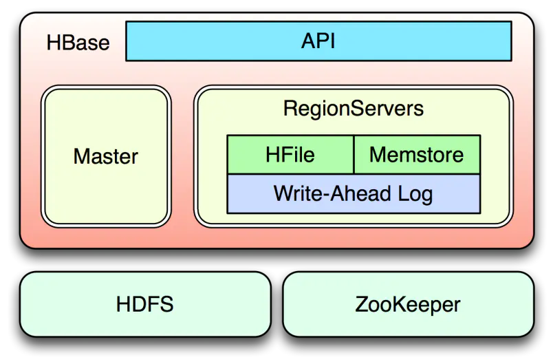
实验过程
准备阶段
创建实验用户hadoop
[再已配置mysql cluster的基础上] 可以采用已有的mysql用户，给mysql用户做相应管理员权限赋权，后续需要用到用户名hadoop的时候，使用mysql
此处选择新创建hadoop用户
$ sudo useradd -m hadoop -s /bin/bash #创建hadoop用户，并使用/bin/bash作为shell
$ sudo passwd hadoop #为hadoop用户设置密码，之后需要连续输入两次密码
$ sudo adduser hadoop sudo #为hadoop用户增加管理员权限
$ su - hadoop #切换当前用户为用户hadoop
$ sudo apt-get update #更新hadoop用户的apt,方便后面的安装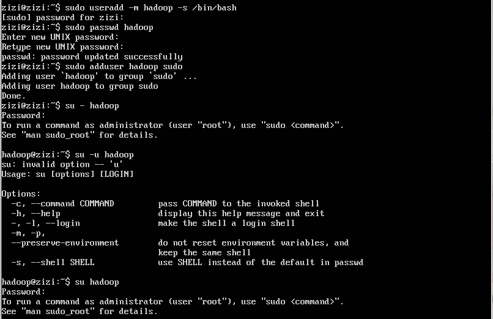
SSH配置免密登录
安装SSH，设置SSH无密码登陆
$ sudo apt-get install openssh-server #安装SSH server
$ ssh localhost #登陆SSH，第一次登陆输入yes
$ exit #退出登录的ssh localhost
生成密钥
$ cd ~/.ssh/ #如果没法进入该目录，执行一次ssh localhost
$ ssh-keygen -t rsa
# 需要连续敲击三次回车
# 第一次回车是让KEY存于默认位置，以方便后续的命令输入
# 第二次和第三次是确定passphrase，相关性不大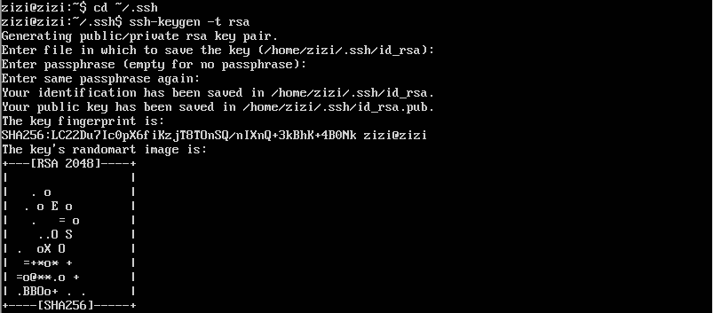
加入授权，免密登录
$ cat ./id_rsa.pub >> ./authorized_keys #加入授权
$ ssh localhost #此时已不需密码即可登录localhost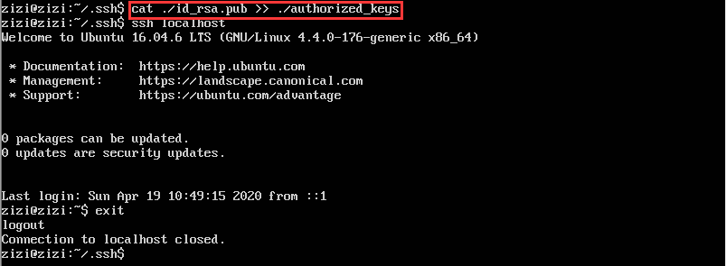
安装jdk1.8
在oracle官网下载jdk1.8，根据个人电脑系统选择对应版本，如
jdk-8u201-linux-x64.tar.gz安装过程
$ mkdir /usr/lib/jvm #创建jvm文件夹
$ sudo tar zxvf jdk-8u201-linux-x64.tar.gz -C /usr/lib/jvm #/ 解压到/usr/lib/jvm目录下
$ cd /usr/lib/jvm #进入该目录
$ mv jdk1.8.0_201 java #重命名为java
$ vi ~/.bashrc #给JDK配置环境变量编辑环境变量
vi ~/.bashrc，在.bashrc文件添加如下指令：export JAVA_HOME=/usr/lib/jvm/java
export JRE_HOME=${JAVA_HOME}/jre
export CLASSPATH=.:${JAVA_HOME}/lib:${JRE_HOME}/lib:$CLASSPATH
export PATH=${JAVA_HOME}/bin:$PATH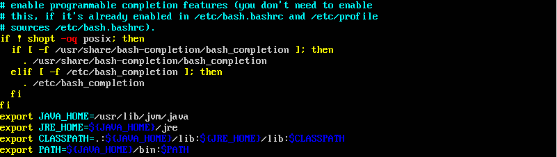
- JAVA_HOME=/usr/lib/jvm/java
使得环境变量生效，并查看是否安装成功
$ source ~/.bashrc #使新配置的环境变量生效
$ java -version #检测是否安装成功，查看java版本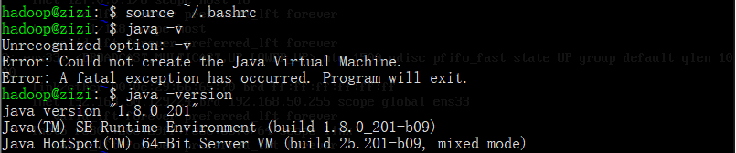
安装hadoop-3.1.2
- 下载hadoop-3.1.2.tar.gz并安装
$ sudo tar -zxvf hadoop-3.1.2.tar.gz -C /usr/local #解压到/usr/local目录下
$ cd /usr/local
$ sudo mv hadoop-3.1.2 hadoop #重命名为hadoop
$ sudo chown -R hadoop ./hadoop #修改文件权限，根据实际情况确定用户名 - 配置环境变量，将下面代码添加到
.bashrc文件:export HADOOP_HOME=/usr/local/hadoop
export HADOOP_COMMON_LIB_NATIVE_DIR=$HADOOP_HOME/lib/native
export PATH=$PATH:$HADOOP_HOME/bin:$HADOOP_HOME/sbin - 执行
source ~/.bashrc使设置生效，并查看hadoop是否安装成功 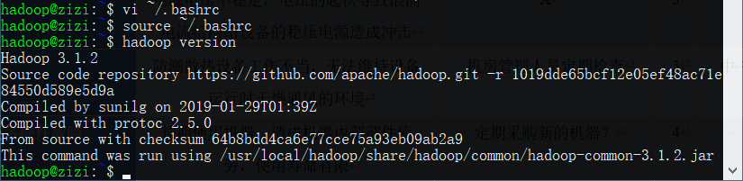
伪分布配置
Hadoop可以在单节点上以伪分布式的方式运行，Hadoop进程以分离的Java进程来运行，节点既作为NameNode也作为DataNode，同时，读取的是HDFS中的文件Hadoop的配置文件位于/usr/local/hadoop/etc/hadoop/中，伪分布式需要修改2个配置文件core-site.xml和hdfs-site.xmlHadoop的配置文件是xml格式，每个配置以声明property的name和value的方式来实现
修改hadoop-env.sh文件
首先将jdk1.8的路径添(
export JAVA_HOME=/usr/lib/jvm/java)加到hadoop-env.sh文件，路径为cd /usr/local/hadoop/etc/hadoop/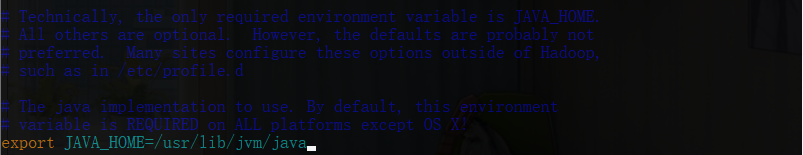
修改core-site.xml文件
<configuration> |
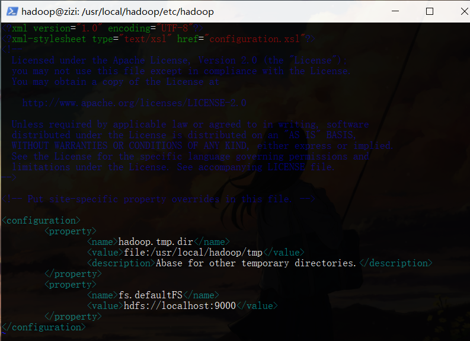
配置hdfs-site.xml文件
<configuration> |
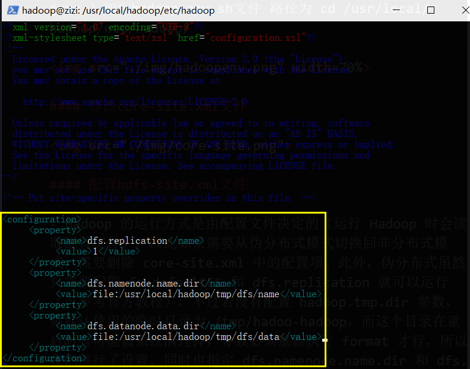
Hadoop配置文件参数参数 属性值 解释 fs.defaultFS NameNode URI The name of the default file system. A URI whose scheme and authority determine the FileSystem implementation. The uri's scheme determines the config property (fs.SCHEME.impl) naming the FileSystem implementation class. The uri's authority is used to determine the host, port, etc. for a filesystem. hdfs://host:port/ dfs.namenode.name.dir Determines where on the local filesystem the DFS name node should store the name table(fsimage) 在本地文件系统所在的NameNode的存储空间和持续化处理日志 如果这是一个以逗号分隔的目录列表，然后将名称表被复制的所有目录，以备不时需 dfs.datanode.data.dir Determines where on the local filesystem an DFS data node should store its blocks 逗号分隔的一个DataNode上，它应该保存它的块的本地文件系统的路径列表 如果这是一个以逗号分隔的目录列表，那么数据将被存储在所有命名的目录，通常在不同的设备 Hadoop的运行方式是由配置文件决定的(运行Hadoop时会读取配置文件)因此如果需要从伪分布式模式切换回非分布式模式，需要删除
core-site.xml中的配置项伪分布式虽然只需要配置
fs.defaultFS和dfs.replication就可以运行（可参考官方教程）若没有配置
hadoop.tmp.dir参数，则默认使用的临时目录为/tmp/hadoo-hadoop，而这个目录在重启时有可能被系统清理掉，导致必须重新执行format。所以同时也指定dfs.namenode.name.dir和dfs.datanode.data.dir，否则在接下来的步骤中可能会出错。配置完成后，执行 NameNode 的格式化
cd /usr/local/hadoop/
./bin/hdfs namenode –format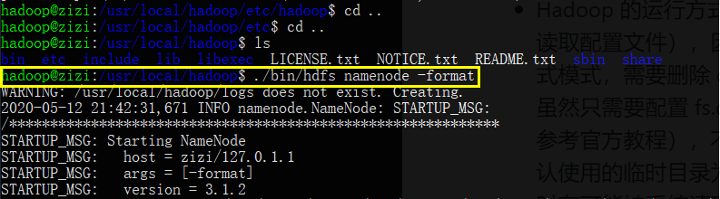
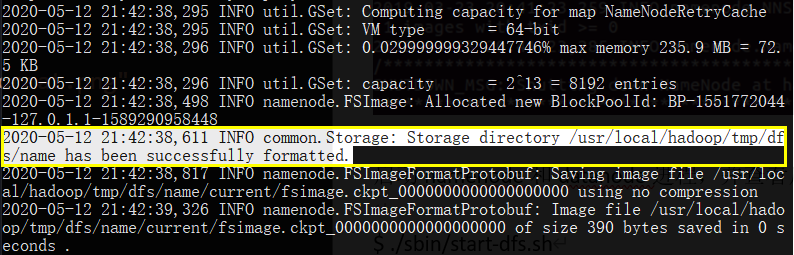
启动
namenode和datanode进程，并查看启动结果$ ./sbin/start-dfs.sh
$ jps- 启动完成后，可以通过命令
jps来判断是否成功启动，若成功启动则会列出如下进程:NameNode、DataNode和SecondaryNameNode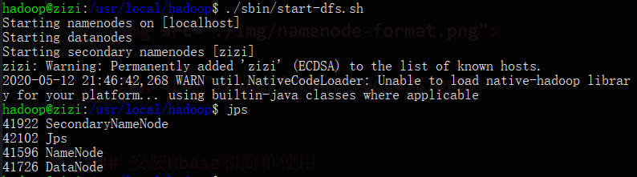
- 启动完成后，可以通过命令
Hadoop出现错误：
WARN util.NativeCodeLoader: Unable to load native-hadoop library for your platform... using builtin-java classes where applicable，解决方案是在文件hadoop-env.sh中增加：export HADOOP_OPTS="-Djava.library.path=${HADOOP_HOME}/lib/native"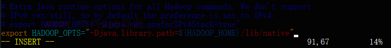
出现
ssh: connect to host master port 22: Connection timed out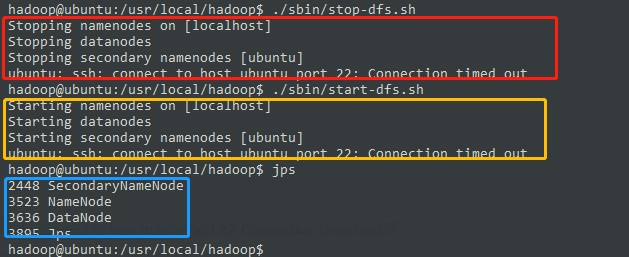
- 解决方法：
查看防火墙
查看ssh是否开启，22端口是否监听
sudo vi /etc/hosts- 127.0.0.1和127.0.1.1都是本地回路/回环地址（区别搜索）
- 解决方法：
有可能出现要求输入localhost密码的情况，如果此时明明输入的是正确的密码却仍无法登入，其原因是由于如果不输入用户名的时候默认的是root用户，但是ssh服务默认没有开root用户的ssh权限
- 输入指令：
$vim /etc/ssh/sshd_config - PermitRootLogin yes
- 之后输入下列代码重启SSH服务：
$ /etc/init.d/sshd restart，即可正常登入（免密码登录参考前文） - 注：Ubuntu 16.04若安装openssh-server，是无法找到/etc/init.d/sshd文件的，但是可以启动/etc/init.d/ssh
- 输入指令：
访问web界面
成功启动后，如果是在桌面版linux上安装的，也可以访问 Web 界面 http://localhost:9870（老版本为50070） 查看NameNode 和 Datanode 信息，还可以在线查看 HDFS 中的文件。
如果是在服务器版linux上安装的hadoop, 为了进行浏览器访问，需要配置一个桌面版的虚拟机来进行，输入用IP地址代替localhost）
此处配置了静态ip地址为
192.18.50.129，在宿主机上输入http://192.168.50.129:9870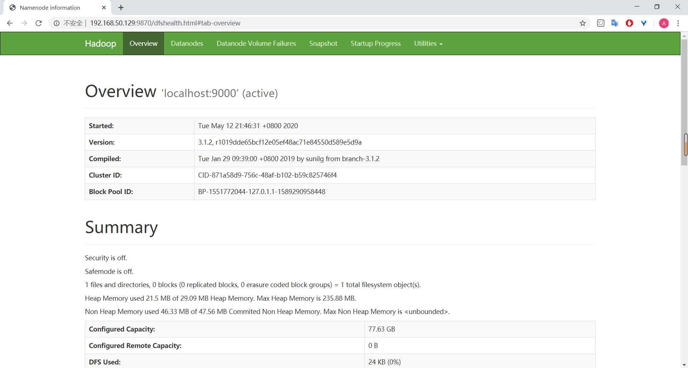
注意
- DFS文件系统格式化时，会在namenode数据文件夹（即配置文件中dfs.namenode.name.dir在本地系统的路径）中保存一个current/VERSION文件，记录clusterID，标识了所格式化的 namenode的版本
- 如果频繁的格式化namenode，那么datanode中保存（即配置文件中dfs.data.dir在本地系统的路径）的current/VERSION文件只是你第一次格式化时保存的namenode的ID，因此就会造成datanode与namenode之间的 id 不一致。可能导致datanode无法启动
例子
创建执行MapReduce作业所需的 DFS 目录:
$ bin/hdfs dfs -mkdir /user
$ bin/hdfs dfs -mkdir /user/<username> #<username> 问用户名，如hadoop拷贝输入文件到分布式文件系统:
$ bin/hdfs dfs -put etc/hadoop input
运行一些例子
bin/hadoop jar share/hadoop/mapreduce/hadoop-mapreduce-examples-3.2.1.jar grep input output 'dfs[a-z.]+'
查看输出的文件(files): 从分布式文件系统中拷贝文件到本地文件系统并查看:
或者直接在分布式文件系统上查看:bin/hdfs dfs -get output output
cat output/*$ bin/hdfs dfs -cat output/*我也不知道对不对

结束运行
sbin/stop-dfs.sh
YARN单机配置
通过设置几个参数并运行ResourceManager daemon and NodeManager daemon，可以在YARN上以伪分布模式运行MapReduce job
配置mapred-site.xml(cd /usr/local/hadoop/etc/hadoop)如下:
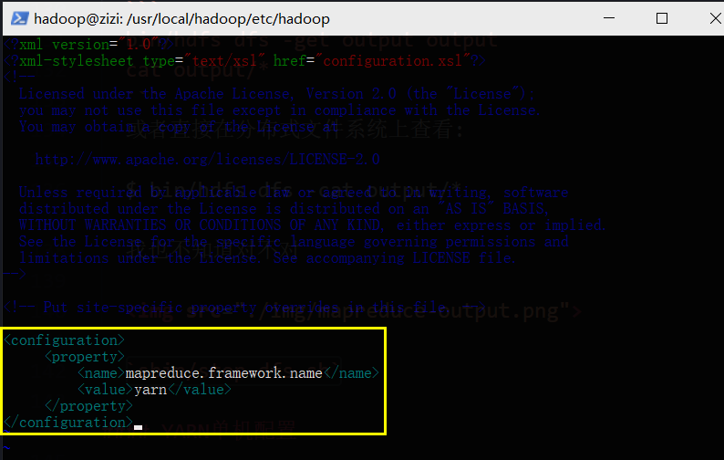
配置yarn-site.xml如下：
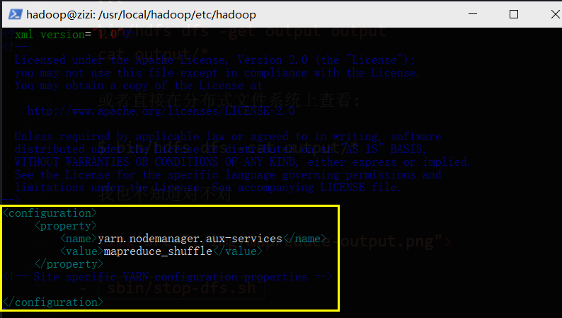
启动ResourceManager daemon 和 NodeManager daemon:
cd /usr/local/hadoop
sbin/start-yarn.sh
# 输出如下
Starting resourcemanager
Starting nodemanagers
sbin/stop-yarn.sh # 关闭如果是在桌面版linux上安装的, 可以用浏览器打开资源管理器端口，默认为：ResourceManager - http://localhost:8088/ （如果是在服务器版linux上安装的hadoop, 为了进行浏览器访问，需要配置一个桌面版的虚拟机来进行，输入用IP地址代替localhost） - 同上 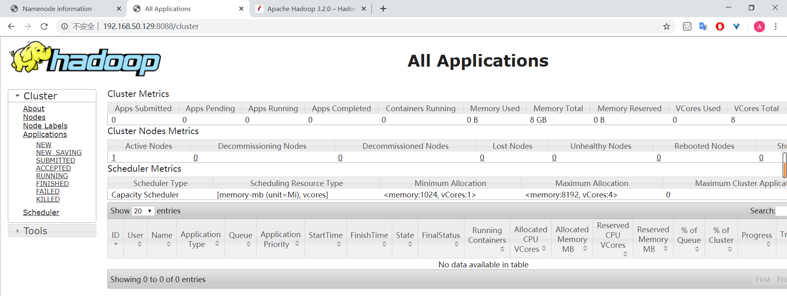
安装Hbase和简单使用
安装
# 解压安装包hbase-1.2.11-bin.tar.gz至路径 /usr/local |
配置环境变量
给hbase配置环境变量，将下面代码添加到.bashrc文件
:export PATH=$PATH:/usr/local/hbase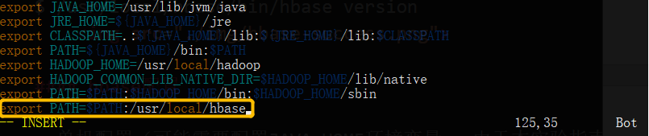
执行source ~/.bashrc使设置生效，并查看hbase是否安装成功
/usr/local/hbase/bin/hbase version或者直接hbase -version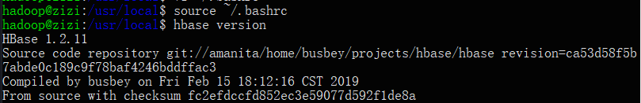
hBase单机配置
单机配置（可能需要配置JAVA_HOME环境变量，由于本实验指南在HADOOP安装时已配置，故省略）
配置
/usr/local/hbase/conf/hbase-site.xml如下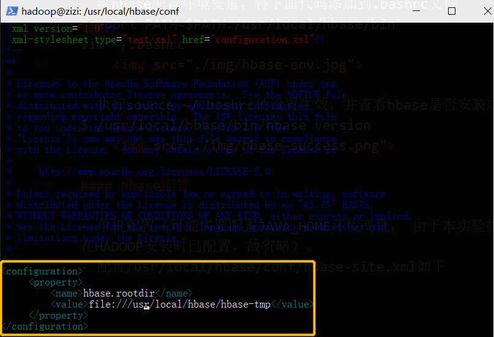
采用如下命令启动服务、查看进程和启动客户端
$ cd /usr/local/hbase
$ bin/start-hbase.sh
$ jps
$ bin/hbase shell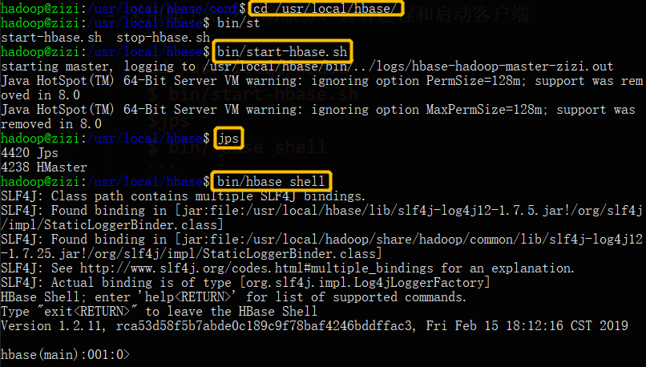
配置伪分布模式的指南
- 配置分布模式方法请查阅官方文档
配置hbase-env.sh
cd /usr/local/hbase/conf修改hbase-site.xml文件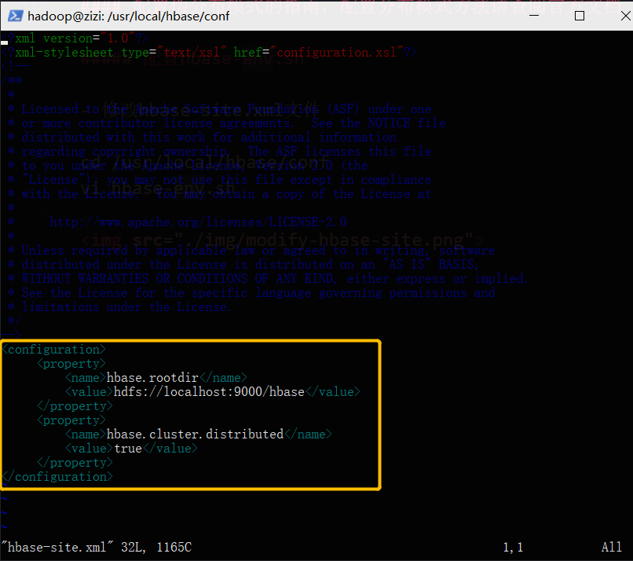
将HBase的数据存储到之前的Hadoop的HDFS上，hbase.rootdir的值便是HDFS上HBase数据存储的位置，值中的主机名和端口号要和之前Hadoop的core-site.xml中的fs.default.name的值相同
启动hBase
# 先stop-hbase.sh
$ start-dfs.sh
$ cd /usr/local/hbase/bin
$ ./start-hbase.shhbase集群在启动的时候报错：JAVA_HOME is not set and Java could not be found出现这种错误，一般应该是hbase下conf文件下的hbase-env.sh文件中的java_home的环境变量没有配置或者是被注释了
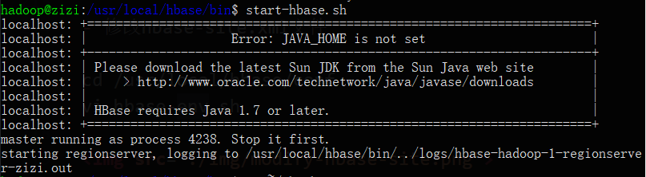
解决方法：
cd /usr/local/hbase/conf
vi hbase-env.sh
export JAVA_HOME=/usr/lib/jvm/java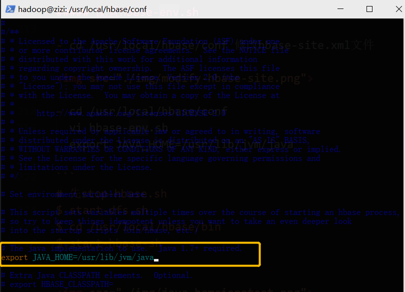
正确顺序：启动Hadoop—>启动HBase—>关闭HBase—>关闭Hadoop
注：执行jps命令，如果在Hadoop进程的基础上新增加了如下三个进程则表示HBase启动成功：1. HMaster，2. HRegionServer，3. HQuorumpeer
查看DFS中Hbase 目录，自动创建
cd ~ |
hadoop@zizi:~$ hdfs dfs -ls /hbase ls: Call From zizi/127.0.1.1 to localhost:9000 failed on connection exception: java.net.ConnectException: Connection refused; For more details see: http://wiki.apache.org/hadoop/ConnectionRefused 该问题一般由于没有start dfs 和 yarn造成的

仅仅为了测试和学习，生产环境不会在一台机器上启动备份master
HMaster服务器控制HBase集群，图中的指令启动三个备份HMaster，体现了伪分布式(在一个机器上多个备份HMaster服务器)，一个HMaster没了，其他的还可以使用
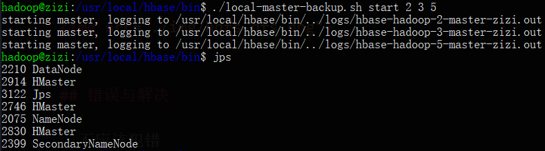
The HMaster server controls the HBase cluster. You can start up to 9 backup HMaster servers, which makes 10 total HMasters, counting the primary.
To start a backup HMaster, use the local-master-backup.sh.
For each backup master you want to start, add a parameter representing the port offset for that master.
Each HMaster uses two ports (16000 and 16010 by default).
The port offset is added to these ports, so using an offset of 2, the backup HMaster would use ports 16002 and 16012.
The following command starts 3 backup servers using ports 16002/16012, 16003/16013, and 16005/16015.如：start 1 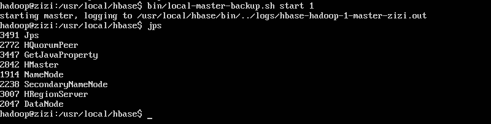
http://192.168.50.129:16010/master-status可以访问，port=16000无法访问，port=16011可以访问
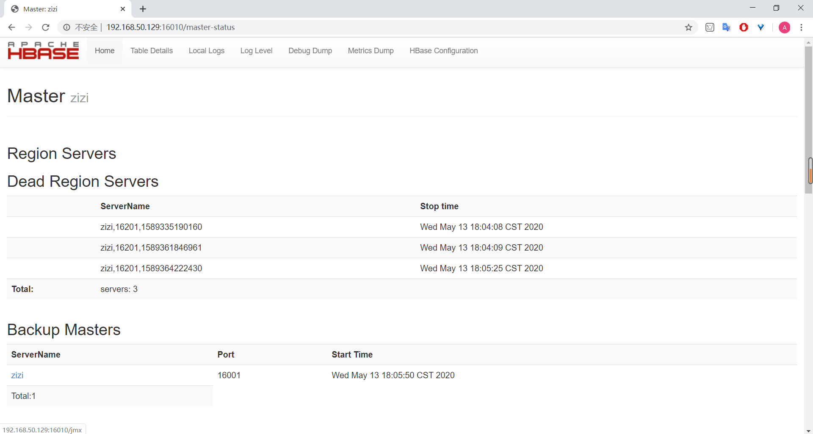
启动和停止附加区域服务器RegionServers
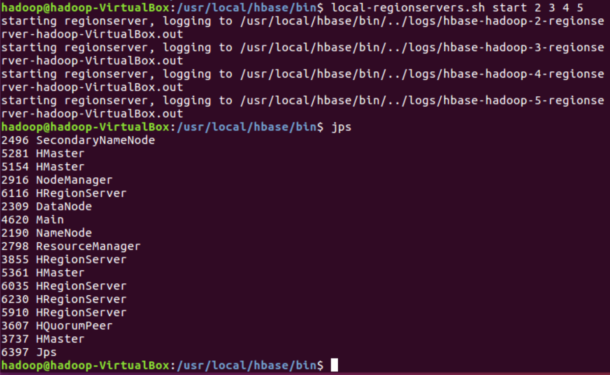
关闭刚才开启的备份HMaster服务：
local-master-backup.sh stop 1
建表
进入交互界面
$ hbase shell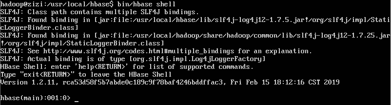
使用create命令创建一个新表，必须规定表名和列族名
使用list 命令可以显示表信息
使用 describe 命令显示表的详细信息，此时表中的VERSIONS默认设置为1
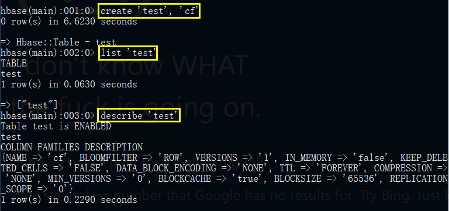
向表中加入数据，使用 put 命令
使用scan命令扫描整个表取得数据
取一行数据，使用get指令
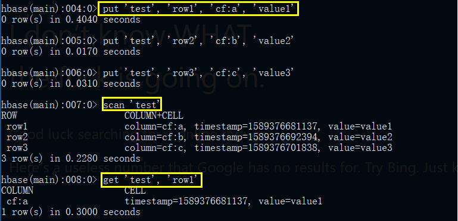
修改表模式，使用alter命令，如修改存储版本数，为5个版本
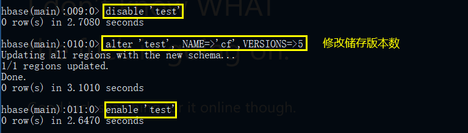
实验总结
请问伪分布和分布式的含义有何不同？就本实验，你是如何理解在一台计算机上做到“伪分布”的？
- 伪分布式模式是一个相对简单的分布式模式，用来测试
- 不能把这个模式用于生产环节，也不能用于测试性能。
- 多个HMaster备份节点在一台机器上工作
在1.2小节进行安装SSH并设置SSH无密码登陆，请问这个安装的目的是什么？ > ssh must be installed and sshd must be running to use the Hadoop scripts that manage remote Hadoop daemons if the optional start and stop scripts are to be used. Additionally, it is recommmended that pdsh also be installed for better ssh resource management.
- ssh必须安装，sshd必须运行，Hadoop的脚本才可以远程操控其他的Hadoop和HBase进程
- ssh之间必须都打通，远程登录、自动登录、免密登录
如果继续向Hbase的test表中put行键为”row1”，值为其它字符串的数据，put 'test' ,'row1', 'cf:a', 'value6'，会发生什么？如果采用语句get 'test', 'row1', {COLUMN=>'cf:a', VERSIONS=>3} 进行查询，分析你得到的结果。put与关系数据库的插入有何不同？
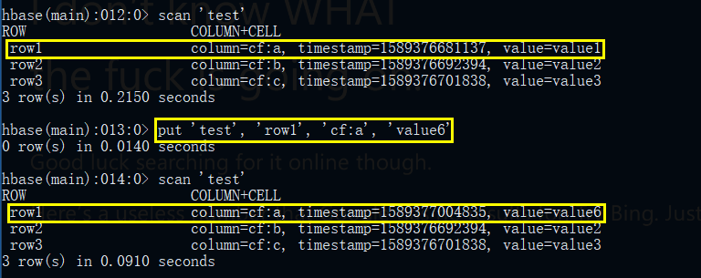
- VERSIONS的作用
- 当想要用HBase存储历史几个版本的数据是（达到类似于git的效果时）可以设定版本号，版本号为几就是存储几个版本的数据
- 最开始，没有设定VERSION，则为VERSIONS为1，也就是说，默认情况只会存取一个版本的列数据，当再次插入的时候，后面的值会覆盖前面的值
- 后面修改表结构，让Hbase表支持存储5个VERSIONS的版本列数据 alter 'test', NAME=>'cf',VERSIONS=>5
- 解析：一开始row1只有一条数据，然后又插入了第二条数据，虽然scan 'test'只返回最新的数据，但是用get那条语句能够返回历史版本，所以返回两条数据 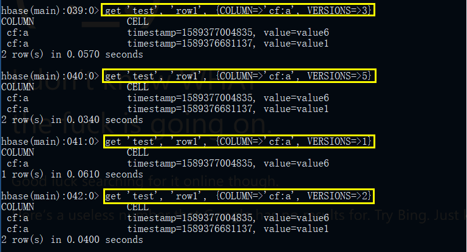
- VERSIONS的作用
错误与解决
- 如何执行shell脚本！！！-牢记
hadoop@zizi:/usr/local/hbase/bin$ local-master-backup.sh start 2 3 5
local-master-backup.sh: command not found - Hbase启动警告：Java HotSpot(TM) 64-Bit Server VM warning: ignoring option PermSize=128m;
- hBase中get和scan的区别和总结